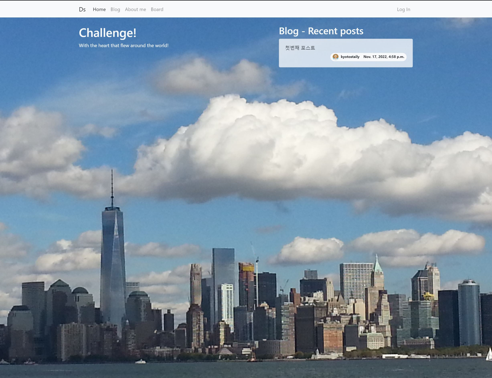

常に勉強し研究する開発者シンドンジュンです。
自己紹介(Introduce)
- 韓国の汝矣島の現代カードのData Science Partチームでサーバーを管理することをしました。主にサーバーのエラーを確認して報告するモニタリングを担当し、担当者の方々と一緒にJiraを通じて積極的にコミュニケーションしながら、Postgresqlを活用して顧客のカード使用のデータを集計し、情報を引き出すことをした経験があります。
- 今まで習得してきた技術を出来るだけ自分のものになれるように努力し、結果物が出るようにすることを最優先にします。このために、PythonとHtml、そしてDjangoフレームワークに基づいたWeb開発を通じて、Back-endとFront-endの技術を理解する能力を築くよう努めてきました。
- 新しい分野について学ぶのが大好きです。現在はJSP/Serveltをベースにしたプロジェクトを作ってみながら練習をしています。
ITのキャリア(Work Experience)
- 現代カード : 2021.08 ~ 2021.12
- Data Science Platform 1チームで、サーバーの円滑な運用を監視し、カードを使用する顧客の傾向に合った購入を勧めるためのデータを作成するデータを集計し、情報を取り出す作業をしました。
ポートフォリオ(Portfolio)
- 個人ホームページ制作 Githubプロジェクトに移動 
- [プロジェクトの説明]
- Django + bootstrap Python Web開発の定石という本を活用して、これまで習得してきたPythonの言語とDjango frameworkを中心にHtml、Css、Javascripts、Bootstrap、Postgresql、Docker、Github、Awsを使って独自のドメインを持つサイトを制作する過程の中でこれまでよく知らなかったプログラムの使い方を学べたプロジェクトでした。
- cmderを使用してvenvとして動作させた仮想環境でDjango frameworkをベースに制作したファイルを、毎日githubにコミットした後、コミットした内容を元にAmazon Linuxにgit cloneをさせてサーバーに載せた後、route58でドメインを購入これにより、httpsを使用する安全なサイトを作成し、ページの機能が正常に機能するまでの一連の全体のプロセスを経験しながら、Web開発がどのようなものかを経験することができました。
- ホームページを開設した後、他の利用者の要件に対する受け入れと解決がより難しくて難しいことを学ぶことができました。
- JSPを利用した簡単な会員管理プロジェクト Githubプロジェクトに移動
- [プロジェクトの説明]
- JSP、MySQL、Eclipse、およびTomcatを使用して練習用に作成されたプロジェクトで、JDBCとデータベースがどのように機能するかJSPのおおよそのスキームは、どのように行われているかを練習するためのプロジェクトです。
- IT関連資格
- 情報処理産業記事（2020.11.19）
- 修了
- 日本就職JAVAウェブ開発者研修コース(2019.12~2020.10)
今まで学んで使ってきた技術（Skills）
- Python, Javascript, Css, Html, Docker, Aws, Django
- 本や講義などを通じて学習し、個人Web開発をしながら使用した経験があります。
- PostgreSQL, Jira, Hadoop
- 会社がサーバーのエラーを確認して報告するときは、担当者の要求でデータを取り込んで特定のタスクを進めることをしたときに使った経験があります。また、個人Web開発をしながらサーバーに接続する作業をする際に使用しました。
- Java, Jsp, Servlet, MySQL
- Web開発者研修コースを通じて習得した後、プロジェクトを進めながらどのように使用して動作するかを勉強しています。
学歴(education)
2004.3〜2012.2 - 啓明大学卒業（専攻：国際通商学科）